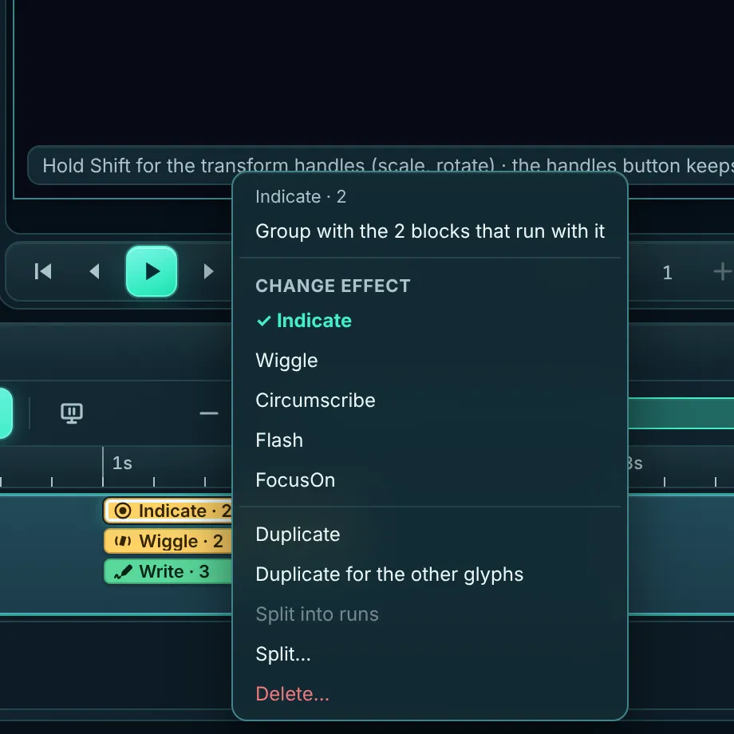
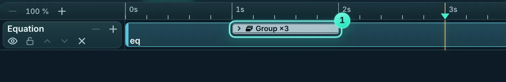
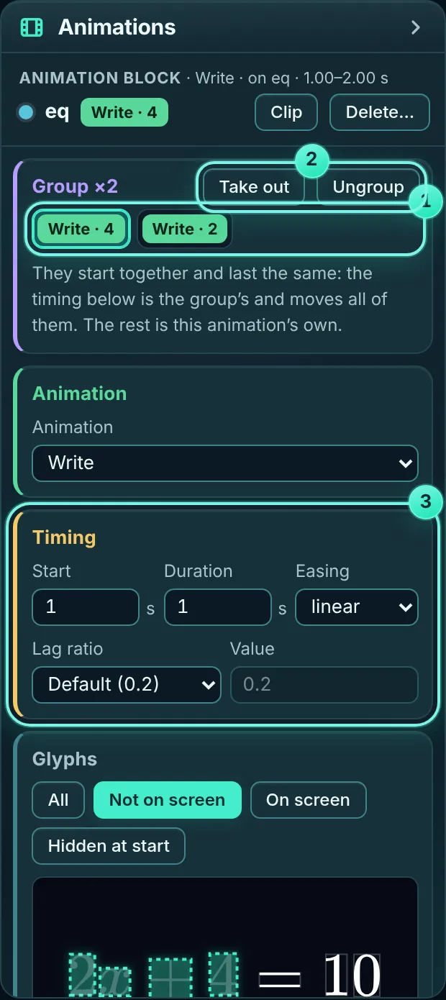
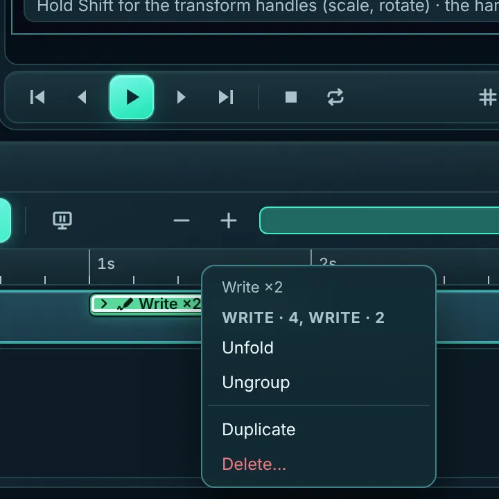

Groups of animation blocks
Some blocks belong together: the two sides of an equation written at once, three terms that light up in the same second. A group ties such blocks into one thing on the timeline, so that you move, stretch, copy and delete them as one.
What a group is
A group is a set of blocks of one clip that start together and last the same. Each keeps its own animation, its own glyphs and its own settings, as the animations of Manim’s AnimationGroup do. What they share is their time: a group has one start and one length.
The timeline draws a folded group as one block on one lane, with a double line along its foot to say there are blocks under it. Its label names the animation and says how many blocks run it: Write ×2. When the members run different animations it reads Group ×3 instead, and when they are of different families, such as an Emphasis and an Appear, the block takes a colour of its own.
Only blocks that name glyphs can be in a group: Appear, Disappear, a part of the formula Transform and Emphasis. A keyframe takes the whole formula, so no block that animates glyphs runs beside it; a Morph names pairs, not glyphs, and is not grouped either.
Making a group
By splitting a block
The usual way is to split a block. Right-click a block that names glyphs and choose Split into runs: the block becomes one block for each run of consecutive glyphs, all at its time. Here a Write over 2x + 4 and 10, which leaves the equal sign out, becomes two blocks, one for each side.
The other commands that make blocks run together make groups too. Split… moves glyphs you choose to new blocks, one or several at once (Timing tools shows its dialog), and Duplicate for the other glyphs puts a copy of the block beside it for the glyphs it does not animate.
By hand
Any blocks of a clip that start together and last the same can be grouped. Right-click one of them: if others run with it, the menu has Group with the block that runs with it, or with the number of them, for instance Group with the 2 blocks that run with it. If their starts or their lengths differ, even a little, the entry is not there.

Grouped, they read Group ×3 on the timeline, since they run three animations, and the block takes a colour of its own, since they are of two families: Emphasis and Appear.

Folding and unfolding
A folded group is one block. To work on its members apart, unfold it: press the arrow at the left of the group, or double-click it. The members take a lane each, with dashed borders to show that they are grouped. The arrow on the first of them folds the group again.
Which groups are unfolded is only how you view the timeline. The project file does not keep it, so a project opens with its groups folded, even when you open the same project again. The menus have the same commands for the keyboard: Unfold in a group’s menu, and Fold the group in the menu of one of its unfolded members.
Rest the pointer on a folded group to see its tooltip: how many animations it holds, what each one is, and when the group runs.
Moving and stretching
Drag a folded group by its body to move all its blocks, or by one of its edges to stretch all of them. The group has the limits all its members share: it stops where any of them would run into an animation of the same glyphs, or leave its clip, and the readout under it says which. Esc puts it back.
Unfolded, dragging any member moves all of them as well. With a folded group selected, Ctrl+D copies the whole group (another group, right after it) and Delete asks Delete the group? and deletes all of it. With a member of an unfolded group selected, Ctrl+D and Delete act on that member alone. Alt+← and Alt+→ move the whole group by a frame (by five with Shift), folded or not, as a drag does.
In the Animations panel
Select a group and the Animations panel shows Group ×2 at the top: a key for each member, and Take out and Ungroup beside the title. Press a key to see that member’s animation, its glyphs and its settings; change them without touching the others.

The Timing section is shared. Change Start or Duration of any member and the whole group changes with it.
- Take out makes the member you are looking at a block on its own again. The others stay grouped; if only one is left, it stops being a group too.
- Ungroup undoes the group: its blocks are blocks on their own again, where they are.
The menus of a group
Right-click a folded group for its menu. Its header says what it is and the line under it lists its blocks.

- Unfold shows its blocks on lanes of their own, and Ungroup undoes the group.
- Group with the 2 blocks that run with it takes in blocks that start with the group and last as long, if there are any.
- Duplicate copies the whole group, and Delete… deletes all of it after you confirm.
What one animation of the group can do on its own, such as changing its animation or splitting it, is in the menu of that block, once the group is unfolded, and in the Animations panel. That menu starts with the group’s commands: Fold the group, Take out of the group and Ungroup.
The rules of a group
- A group has at least two blocks, and they are all blocks of one clip.
- They start together and last the same.
- They name glyphs: no keyframe and no Morph.
- Inside a group the rule of any two blocks holds: two of them cannot animate the same glyph at the same time.
- If an edit leaves a block that no longer runs with the others of its group, that block leaves the group by itself, and a group left with one block stops being one.
Groups are saved with the project, and a project made before groups existed opens as it was. In the exported Python a group is one self.play with all its animations, the same text the blocks give without the group:
# 1 s – 2 s: eq write, eq write
self.play(Write(VGroup(*eq_g[:4])), Write(VGroup(eq_g[5], eq_g[6])), run_time=1)More on the blocks themselves, and on blocks that overlap without being grouped, is in Animation blocks.
Where to go next
- Timing tools covers the menus of a clip, copying and pasting its timing, and splitting a block.
- The generated Python reads an exported scene line by line.